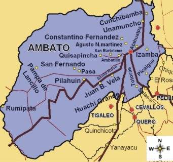

Se localiza al centro de la Región interandina del Ecuador, en la hoya del río Patate,
atravesada por el río Ambato, a una altitud de 2580 m s. n. m. y con un clima templado andino de 15,7 °C en promedio.

Limites:Limita con las Parroquias: Unamuncho, río Ambato, Atahualpa y el río Culapachán
Distancia: Por la Panamericana Norte a 5 Km de la ciudad de Ambato
Superficie: 27,2 Km
Altura promedia:2500 msnm.
Temperatura Promedia: 12°C
Población Total: 14.563 Habitantes
idioma: Español
Religión: Católica y evangélica
Clima: Es excelente para la producción agrícola